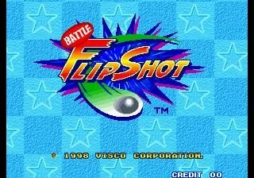
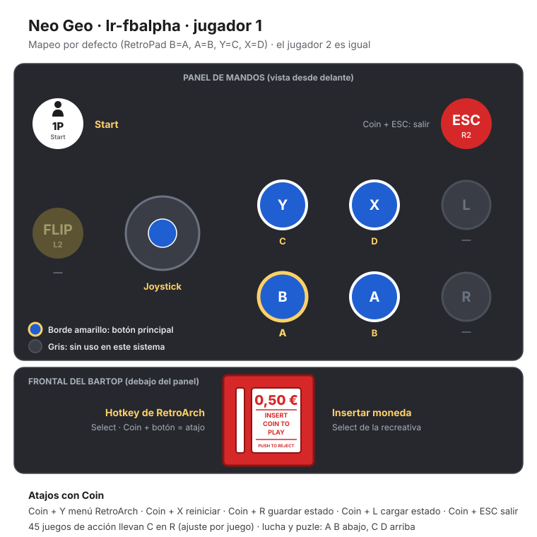

Neo Geo · Nº 12
Battle Flip Shot
- Año: 1998
- Desarrollador: Visco
- Género: Deportes / Varios
- Jugadores: 2 jugadores
Battle Flip Shot (c) 1998 Visco Corp.
Un juego moderno al estilo de «Pong», con personajes a elegir.
Controles
que A haga el tiro especial y que B + joystick deslice al personaje. Hay una provocación: comprobar si es C o D.
Deporte de pelota: A y B abajo.
| Panel | Juego |
|---|---|
 | A · Tiro especial (Power Shot) |
 | B · Con el joystick: deslizarse |
 | Empezar |
 | Meter una moneda |
+  | Salir del juego |
El panel en Neo Geo


Argumento
Recopilado de internet (2026-11-02). Lo marcado con ⚠️ no está probado en la bartop.
No tiene historia: cinco personajes de distintos países se enfrentan en un torneo, como Chinta Nemono (Japón).
Fuentes
Wikipedia en inglés no tiene artículo propio de este juego; los datos salen de las descripciones de los vídeos.
Jugabilidad
Recopilado de internet (2026-11-02). Lo marcado con ⚠️ no está probado en la bartop.
- Tipo de juego: un Pong moderno de Visco (1998).
- Campo: cada jugador se mueve por su mitad con un escudo que hace de pala.
- Objetivo: devolver la pelota hasta derribar las dianas de las esquinas y del fondo del campo contrario.
- Personajes: 5, cada uno con su tiro especial. También pueden deslizarse para llegar antes y provocar al rival.
- Estructura: ver «Guía de niveles».
Fuentes
Guía de niveles
Recopilado de internet (2026-11-02). Lo marcado con ⚠️ no está probado en la bartop.
- Se juega contra el resto de personajes y después contra un jefe final que tiene los tiros especiales de todos.
- Si pierdes contra el jefe final, hay que volver a ganar al penúltimo rival antes de repetir.
- ⚠️ El vídeo de «Vídeos» no tiene capítulos.
Fuentes
Objetos
Recopilado de internet (2026-11-02). Lo marcado con ⚠️ no está probado en la bartop.
⚠️ Las fuentes consultadas no hablan de objetos.
Fuentes
Trucos y secretos
Recopilado de internet (2026-11-02). Lo marcado con ⚠️ no está probado en la bartop.
Secretos
⚠️ No he encontrado trucos en las fuentes consultadas.
Fuentes
Longplay

Partida completa de la recreativa (12 min), de World-of-Longplays: Arcade Longplay [034] Battle Flip Shot.